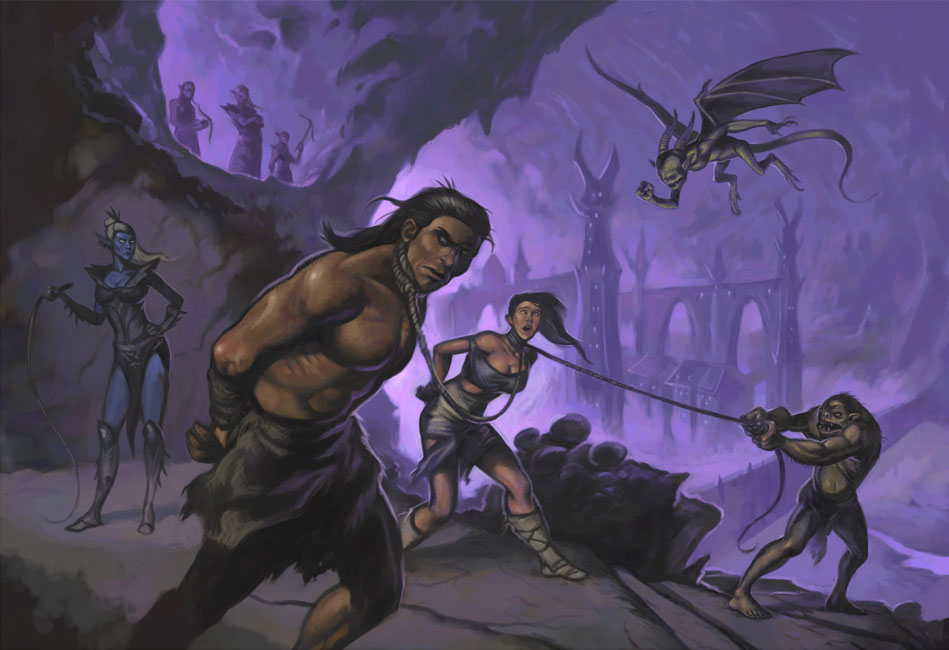

Working in the Dark
It turns out that elves have keen hearing.
After taking 2, maybe 3, steps toward the elf she turns on you and throws some weird ball string things.
You are wrapped up tighter than a summer ham (That's really tight where you are from.)
Unable to free yourshep you flop around on the ground like a fish out of water.
The elf casually walks over to your prone form, "I thought a rival was trying to put a knife in my back, but it was just a huge payday wandering right into my hands."
Now that she is closer you can see that her skin, while porcelain smooth, is the color of ash and her eyes glow red with a cruel shine.
You try all the diplomatic trick in your limited arsenal to no avail as the elf shoves you into a sack with about a dozen gnomes all bound and gagged.
"Alrighty gents and gent-ettes it's off to the slave pits for you and off to the tavern for me!" She hoists the sack over her shuolder and begins whistling that jaunty tune.